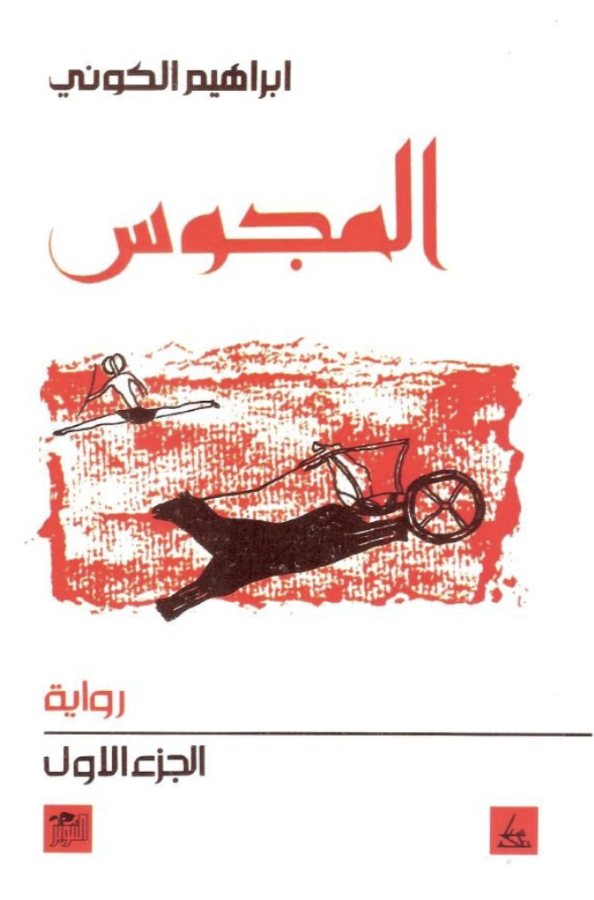

The cover of the second edition, 1992, of the first part of al-Majus (translated by William Hutchins as 'The Fetishists'), published by Dar al-Tanweer
This is part of the #100ArabNovels project, where I try to revisit the Arab Writers'Association's list of 100 most significant novels, as part of trying to understand the Arab imaginary post-2011
Ibrahim al-Koni (b. 1948)'s al-Majus is nothing short of a literary monument. Sculpted, very much like the rock art he refers to throughout, from the history, mythology and stories of the desert people, the Tuareg, and their peculiar environment. al-Koni's novel is told with astonishing cinematic sensitivity, as if he pictured the story being captured on camera, dividing it into scenes, that function into self-contained visual units. Making it easier to read and follow, as the pacing takes into account the need to 'change scenery' every so often. And scenery is a key in this monumental work. al-Koni's ecological awareness, the depth by which he understands the topography, climate, flora and fauna of the Sahara is perhaps what lends his novel this brilliant 'visual' element. One reads al-Koni's text, as if one is seeing the Sahara unfold before his mind's eye, with its harshness, strangeness but also ineffable beauty.
Aside from the bombastic claims stated on his Wikipedia page, the novel spanning more 700 pages (over two parts) takes on the impossible task of telling a glimpse of the history of the Tuareg people, specifically 14thC-15thC, at crossroads of Arabization, Islamization and eventual demise of the old ways of life due to colonization. During that historical moment when the Songhai Empire (c. 1460 - c. 1591 CE) was ascendant taking over much of the known territory where the Tuareg held their migration and trade routes, makes the perfect entry point into questioning how did the Tuareg manage to live in the seemingly inhospitable environment of the Sahara and how they managed to navigate the shifting political structures around them. Al-Koni uses an epic format for his tale: there is a mysterious princess, an exiled, wise chief, a legendary serenader, a dervish, a knight and a host of other characters each more interesting than the other. The work is truly monumental in trying to reveal the richness and fascinating lives of those living in the Sahara, from how they deal with the flora and fauna around them to the mysterious covenants between them and the People of the Unseen. And 'covenant' is a signpost to understand al-Koni's novel. In the very biblical sense of 'covenant'.
Shockingly al-Koni uses a very Judaeo-Christian paradigm to look at notions of 'original sin', 'covenant', 'paradise' and even the conception of women and sex as essentially evil. It is shocking not because the Tuareg are Muslim, but because Christianity declined significantly from North Africa after the 7th century and never reappeared until European colonialism arrived seven centuries later. It is very hard to imagine that the Tuareg were influenced in any significant way with any Christian theology in the 14th or 15th centuries. And its more difficult to imagine that their mythology, worldview was in any way shaped by it. And yet somehow al-Koni managed to frame his entire premise, moral premise that is, of his epic, on the fall from paradise, in that context, paradise is the legendary, lost oasis 'Waw' (for English-speaking readers, its charmingly reminiscent of 'wow' and the oasis does elicit that reaction). The desert people have developed an elaborate moral and ethical and even aesthetic worldview based on that story that al-Koni refers to, again and again throughout his epic, which is nothing more than Adam and Eve's fall from paradise. And not even taking into account the Islamic lesser misogynistic view (in Islamic sources, the fall is attributed to both Adam and Eve, and not to Eve alone and not to the snake-- there are no snakes in the Muslim sources), women are not looked upon kindly in the originary tale and they suffer, unnecessarily throughout al-Koni's enchanted tale.
al-Koni embraces an extremely ascetic view in response to the tale of the fall, the loss of the original paradise. The moral conflict that ensues, of man's constant longing to find that lost paradise, and that haunts everyone in this epic, seems to be only resolved through extreme actions of self-abnegation and denial. Going as far as one character performing penectomy on himself in the middle of the desert and another giving up his soul to the legendary, infinitely wise barbary sheep guarding the holy mountain. Women, sex and desire are depicted, allegorized and wrought through this vivid image of the tempting, evil serpent that poisons people's bodies and souls. It is al-Koni's greatest weakness to tie sexuality to such 'poisonous' conceptual schema and along the way implicate women in a less flattering light, to say the least.
But the longing for the lost paradise, which elicits different responses from different characters, does have its ennobling effect. al-Koni understands the miraculous effects of 'wajd', that unrequited longing, ironically also so central to Arabic poetics and Arabic thinking, turns into the best metaphorical vehicle to describe the desert's people's sehnsucht, when not driving his characters to sexual frenzy and maddening melancholy. al-Koni provides a surprising wise critique of the flipside of sehnsucht, namely, greed. Not exactly sticking to probable historical evidence (the desert people, the Tuareg specifically did settle in town and cities and did practice agriculture and engaged in widespread trading from Roman times till colonialism), al-Koni idealizes the Tuareg as naturally anti-capitalists who were against capitalist accumulation and who have a historical aversion to gold. Developing a mythical account of how the Tuareg formed a covenant with the People of the Unseen (taken to be Jinn), in exchange for peace, the Tuareg won't touch the accursed metal.
al-Koni's idealization of the Tuareg as nomads who refuse settlement, and refuse capitalist driven accumulation and who honour the ethics of the desert might be at conflict with actual historical evidence and what archaeological remains (that show variety of settled communities, agriculture and extensive trade networks) tell us, but it situates them in a larger world context, where their values, ideas and worldview can be appreciated beyond the vastness and silence of the desert.
And silence plays a crucial part in al-Koni's tale, it structures conversations, its sets the stage for the natural score of the desert, sand, wind, clouds, rocks, acacia trees, to take place. Never was silence so cherished and given a privileged role in a story as in al-Koni's. It is the closest 'sound' to celestial music, to the melody of the lost paradise, its the setting through which people try to weigh words against their thoughts and align them with the world before speaking them. And attuning to that process, while picturing the silence, has a curious and spell-binding effect.
Its not just Judeo-Christian morality, misogyny and genophobia that taints the novel. In drawing the larger context of the Tuareg's social and political environment, al-Koni reveals disturbing racism and anti-blackness. al-Koni does not explain much of the social caste system of the Tuareg and how they owned and intermarried with their slaves, forming a large underclass that were basically the labour force for a long time (until the French abolished slavery, not out of any wish to advance people's rights but to undermine the Tuareg's economic base). One can argue that al-Koni might have done that to show how the Tuareg perceived of their neighbours, contenders and enemies without wishing to change the truth of that matter. But then they never speak. The Hausa people, Bambara, Songahi, Amhara, whichever ethnicity one can think of, are never really given any chance to be anything but receptacles of the Tuareg's worldview. They are slaves, warriors, greedy heathen merchants who worship gold, evil sorcerers, there is almost not one single redeeming character of any race outside the Tuareg. Forcing one to think of al-Koni's epic as nothing more than pretext to some kind of proto-nationalist propaganda.
It can be understood in the context of resisting hegemonic Arab culture and the systematic and historical suppression and erasure of Amazigh people and their history but it doesn't explain the denigration and derision of other races.
And yet amusingly enough, after one reads the epic tale, one realizes the Amazigh people are not really that different from their Arab counterparts. They live in an arid, harsh environment, follow a noble code of chivalry, believe in the magical power of poetry and treat their camels as human companions. Its no coincidence that several historians noted the ease by which the Arabs adapted to North Africa in spite of language and religious barriers. And it made al-Koni's effort to render that history and legacy into Arabic quite a smooth process.
al-Majus, a watershed for the people of the desert (bombastic claims aside), is an extraordinary attempt to render in Arabic a history that would otherwise be lost or remembered only in song and stories passed on among the Tuareg themselves. In venturing to use an epic form, al-Koni walked a fine line between creating another national myth-making narrative and really challenging modern Arab literary imagination and perception of what constitutes the Arab imaginary and who can write about it, even if they are not Arab. He might not have come out of such venture unscathed (no people are that idealistic, and misogyny and racism make the novel myopic and lopsided), but to center an entire epic on the desert, to make the desert the actual hero of a modern novel is nothing short of remarkable. Shortcomings notwithstanding.
*The novel was first translated into English by William Hutchins in 2018 and published by Center for Middle Eastern Studies, The University of Texas at Austin